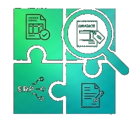

Architetture Cloud-Native & Microservizi
Progettiamo sistemi distribuiti multi-tenant orientati agli eventi, con elasticità automatica e continuità operativa enterprise.
Affianchiamo CFO, COO e Direzioni Generali di Logistica, GDO e Manifattura con piattaforme SaaS multi-tenant e agenti AI autonomi che azzerano le inefficienze operative, blindano i margini e si integrano nativamente agli ERP aziendali.
Progettata per aziende strutturate di Logistica, Grande Distribuzione e Manifattura, inQuadra automatizza l'intero ciclo documentale e contabile affiancandosi al tuo gestionale senza alcuna modifica infrastrutturale.

inQuadraIl copilota di Agentic AI che trasforma l'amministrazione da centro di costo a presidio automatico della marginalità operativa.
Estrazione semantica da PDF, Email, EDI e Sistema di Interscambio
Verifica automatica prezzi unitari, quantità consegnate e listini
Scrittura contabile validata e sblocco pagamenti autorizzati
L'eccellenza ingegneristica è il nostro manifesto. Ogni ecosistema sviluppato da AverisTech poggia su scelte architetturali rigorose, nate da un continuo lavoro di R&D per garantire prestazioni, sicurezza e manutenibilità assolute.
Progettiamo sistemi distribuiti multi-tenant orientati agli eventi, con elasticità automatica e continuità operativa enterprise.
Agenti autonomi e motori predittivi che orchestrano flussi decisionali complessi, riconciliazioni contabili e audit in tempo reale.
Dashboard direzionali ad alta densità informativa progettate per CFO, controller e team operativi ad alto volume.
Sovranità del dato su server UE, isolamento dei tenant e politica di Zero Data Retention sui modelli di intelligenza artificiale.
Uniamo l'esperienza esecutiva di chi gestisce sistemi informativi complessi da oltre due decenni con un'attività costante di ricerca e sviluppo applicata ai processi aziendali.
Il team fondatore e direttivo di AverisTech porta in dote oltre vent'anni di esperienza sul campo nell'architettura di sistemi enterprise, nell'integrazione di processi industriali critici e nella governance tecnologica per aziende B2B.
Non operiamo come un'agenzia generalista: progettiamo software proprietari mission-critical con metriche di ritorno sull'investimento (ROI) misurabili fin dal primo mese di messa in produzione.
Investiamo costantemente in attività di R&D interna e collaboriamo con il mondo universitario e della ricerca per portare in azienda soluzioni di Intelligenza Artificiale concrete, affidabili e verificabili sul campo.
Tradurre la ricerca in software industriale significa garantire alle imprese modelli stabili, conformi alle normative europee sulla protezione dei dati e progettati per risolvere problemi operativi reali.
Affianchiamo CFO, COO e Direzioni IT nella trasformazione dei processi critici aziendali. Contattaci per una sessione tecnica dedicata su inQuadra o sulle nostre architetture Agentic AI.
Via del prato 27 — 00172 Roma (RM)